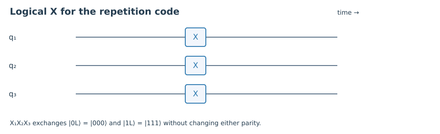

1. Quick check §
Define Pauli weight.
Hint 1
Count affected physical positions.
Worked solution
It is the number of nonidentity tensor factors, independent of the overall phase.
Chapter 05 · Draft lesson
Which errors can evade every check while changing the encoded information?
Starting point: Chapters 1–4; stabilizers, syndromes, and CSS codes.
Anchor example: Comparing the repetition code’s logical Z with the Steane code’s weight-three logical operators.
Method: Separate stabilizers from nontrivial operators in the Pauli centralizer.
Watch for: The smallest nontrivial logical operator sets distance, not the largest generator weight.
This lesson includes explanations, worked examples, and problems with solutions. Advanced results whose proofs are outside the chapter are identified explicitly.
A zero syndrome sounds reassuring. But in Chapter 1 a phase flip changed the logical state without changing either parity. To understand that failure, we must distinguish an operation that leaves the code space alone from one that leaves every state in it unchanged.
A Pauli operator E that commutes with every stabilizer maps the code space into itself. The set of such Pauli strings, ignoring overall phases, is the Pauli centralizer of S. Members of S act as identity on code states. Other centralizer elements can act nontrivially on the logical information while producing no syndrome. These are logical Pauli operators.
On the repetition code, \(\overline X=X_1X_2X_3\) exchanges |000⟩ and |111⟩, while \(\overline Z=Z_1\) changes their relative sign. Both commute with the checks. They anticommute with each other, just as physical X and Z do. Thus their action inside the two-dimensional code space reproduces a qubit’s Pauli algebra.
There are many physical representatives of the same logical operator. Multiplying Z₁ by stabilizer Z₁Z₂ gives Z₂. These operators act identically on the code even though they touch different physical qubits. A logical operator is best thought of as an equivalence class modulo stabilizers, with global phases ignored.
This distinction also changes the decoding objective. Suppose error E occurred and recovery applies R with the same syndrome. The product RE has zero syndrome. Recovery succeeds if RE is a stabilizer up to phase; it fails if RE is a nontrivial logical operator. Merely returning the state to the code space is therefore insufficient. The decoder must return it to the correct logical state.

Worked check 5.1. If E=X₁X₂ and recovery applies R=X₃, where does the state end up?
It returns to the code space, but RE=X₁X₂X₃ is logical X. The syndrome vanishes after correction even though the stored amplitudes have been exchanged.
The weight of a Pauli string is the number of nonidentity positions. For a stabilizer code encoding at least one qubit, its distance d is the minimum weight of a Pauli that commutes with all stabilizers but is not itself a stabilizer up to phase. We write its parameters [[n,k,d]].
Why does a distance-d code correct arbitrary errors of weight at most \(t=\lfloor(d-1)/2\rfloor\)? Take two such Pauli errors E and F. Their product E†F has weight at most 2t, strictly less than d. It cannot be a nontrivial logical operator. If it has nonzero syndrome, its compression to the code is zero. If it has zero syndrome, it must be a stabilizer and its compression is a scalar times P. Either way the Knill–Laflamme condition holds.
The factor two comes from comparing two possible explanations of the same observation. A decoder does not know which error occurred. Their difference must not hide a logical operation. For errors at known locations—erasures—the product stays inside the same known set, so a distance-d code corrects arbitrary errors on up to d−1 specified positions. Knowing where damage occurred is a genuine resource.
The repetition code has full quantum distance one because Z₁ is a weight-one logical operator. Its ability to correct one bit flip does not contradict this: that ability used a restricted error family. Distance describes arbitrary Pauli errors, not just X errors. Likewise a check’s weight tells us how many qubits participate in a measurement, not how many errors the code can correct.
Worked check 5.2. What unknown errors and known erasures can a distance-five code guarantee to correct?
It corrects arbitrary errors on up to two unknown positions, since 2t<5, or arbitrary errors on up to four known positions. Neither statement guarantees correction beyond those bounds for every pattern.
For the Steane code, transversal strings X⊗⁷ and Z⊗⁷ act as logical X and Z on the coset states from Chapter 4. Both have weight seven. Does that mean distance seven? Multiply logical X by an X stabilizer of weight four. Because the stabilizer’s support is contained in all seven positions, four X factors cancel, leaving a weight-three representative of the same logical X. This proves d≤3.
To prove d=3, we also need a lower bound. The single-qubit Pauli syndromes are all distinct and nonzero. A weight-one logical would have zero syndrome, which is excluded. A weight-two logical on distinct sites would be a product of two single-qubit Paulis with equal syndromes, also excluded. Hence no nontrivial logical has weight below three.
The five-qubit code can be checked similarly. X⊗⁵ commutes with its generators and anticommutes with Z⊗⁵. Multiplying X⊗⁵ by g₁=XZZXI gives, up to phase, IYYIX, a weight-three logical. Distinct nonzero single-qubit syndromes exclude weights one and two. Its distance is exactly three.
For large codes, finding the minimum logical weight can be difficult. A numerical search that finds one logical string proves an upper bound, not the absence of shorter strings. In geometric codes, the next chapters replace brute-force searches with path arguments. The same proof discipline remains: construct a logical operator and separately exclude smaller ones.
Worked check 5.3. What can you conclude from finding a weight-four logical operator in an unfamiliar code?
Only that d≤4. The code might have a shorter logical operator elsewhere. To claim distance four, one must rule out every nontrivial logical of weights one, two, and three.
These exercises draw on the whole chapter. Attempt each question before opening a hint, explain your reasoning, then compare it with the worked solution.
Define Pauli weight.
Count affected physical positions.
It is the number of nonidentity tensor factors, independent of the overall phase.
What is the full distance of the three-qubit repetition code?
Look for an undetected phase operation.
It is one, because Z₁ is a weight-one nontrivial logical operator.
How many arbitrary unknown-position errors are guaranteed correctable at d=7?
Solve 2t<d.
t=3. Known-location erasures can be corrected on up to six positions.
Reduce X⊗⁷ by the first X stabilizer from the Hamming matrix.
Cancel X at positions 1,3,5,7.
The remaining support is positions 2,4,6, a weight-three representative of logical X.
Why do same-syndrome errors have a zero-syndrome product?
Syndrome bits add modulo two.
Each commutation sign multiplies, so equal syndrome bits cancel. Their product is in the centralizer, but may be stabilizer or logical.
Show logical X and Z anticommute on the repetition code.
Count their overlapping nonidentity positions.
X₁X₂X₃ overlaps Z₁ once, so the product changes sign when reversed. Restricted to the code, they satisfy the qubit Pauli relation.
Explain why the erasure bound uses d−1 rather than floor((d−1)/2).
Both candidate errors have the same known support.
Their product lies on that same set, so its weight is bounded by the number of erased positions rather than twice that number.
Does a zero final syndrome certify successful decoding?
Ask what logical operation might remain.
No. A nontrivial logical operator commutes with every check. The decoder can return to the code space while changing the logical state.
Does a weight-four stabilizer imply distance four?
Compare checks with logical operators.
No. Stabilizer weight describes a constraint, while distance minimizes the weight of nontrivial logical operators. They are different quantities.
Outline an exhaustive distance check for a small stabilizer code.
Search Paulis in increasing weight and quotient by stabilizers.
Generate the stabilizer group with phases ignored. Enumerate Pauli strings by weight; test commutation with every generator and membership in that group. The first commuting nonmember gives distance, because all smaller weights were exhausted.